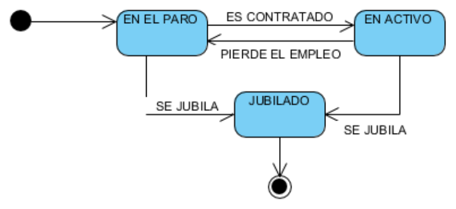

El diagrama de estados
El diagrama de estados describe las distintas situaciones por las que pasa un objeto a lo largo de su vida desde el punto de vista de su comportamiento, junto con las causas, condiciones y consecuencias de cada cambio. Muestra estados, eventos, transiciones y actividades, y responde a una pregunta muy concreta: ¿por qué situaciones ha pasado esto y qué ha hecho que cambie de una a otra?
Es, de toda la familia, el diagrama que más se parece a un programa. Un diagrama de estados se puede traducir casi literalmente a un enumerado con los estados y una comprobación previa en cada operación pública, y esa traducción tan directa es la razón de que sea tan útil: lo que está dibujado se puede programar sin ambigüedad, y lo que no está dibujado queda explícitamente prohibido. Esa segunda parte es la importante. Un diagrama de estados no solo dice qué se puede hacer, dice también qué no se puede hacer, y eso es precisamente lo que ningún otro diagrama del bloque deja por escrito.
No todos los objetos merecen un diagrama de estados. Un objeto que se crea, se consulta y se destruye sin más recorrido vital no aporta nada a este diagrama. Los que sí lo justifican son los objetos cuyo comportamiento depende de su historia: un pedido, que no se puede enviar si no se ha pagado; una reserva, que no se puede cancelar si ya ha empezado; una factura, que no se puede cobrar dos veces; o un expediente académico, que pasa por matrícula, evaluación y titulación. En todos esos casos, la respuesta correcta a una petición depende del estado en que se encuentre el objeto, y ese es exactamente el tipo de lógica que este diagrama captura.
Los elementos del diagrama
Un estado es una situación estable en la que el objeto permanece hasta que ocurre algo que lo saca de ella. Se dibuja como un rectángulo de esquinas redondeadas con su nombre en la parte superior, y en el cuerpo del rectángulo pueden detallarse actividades internas precedidas de las etiquetas entry, do y exit, que se ejecutan respectivamente al entrar en el estado, mientras se permanece en él y al salir. Esas actividades internas son la razón de que un estado pueda tener comportamiento propio sin necesidad de transiciones, y suelen aparecer cuando al cambiar de estado hay que hacer algo obligatorio, como enviar un correo o registrar una fecha.
Los nombres de los estados se escriben en mayúsculas por convención, y conviene elegirlos pensando en qué es cierto del objeto mientras está en ese estado, no en qué se está haciendo con él. PAGADO es un buen nombre de estado porque describe un hecho comprobable; PROCESANDO es peor, porque describe una acción momentánea y deja abierta la pregunta de en qué situación queda el objeto mientras ocurre.
Una transición es la flecha que une dos estados y representa un cambio de situación. Cada transición se etiqueta con la información que explica el cambio, y esa etiqueta puede tener hasta tres partes: el evento que la dispara, la guarda entre corchetes, que es la condición que debe cumplirse para que la transición ocurra, y la acción o efecto que se ejecuta al tomarla. Una etiqueta completa tendría la forma evento [guarda] / acción, y cualquiera de las tres partes puede omitirse.
Esa distinción entre evento y guarda es la que más se confunde. El evento es algo que ocurre, como "se registra el cobro" o "transcurre el plazo"; la guarda es una comprobación sobre el estado interno del objeto, como "el importe cobrado coincide con el total". Una transición puede dispararse por el mismo evento en dos situaciones distintas y acabar en estados distintos, y lo único que las diferencia es la guarda. Cuando eso ocurre, lo correcto es dibujar dos transiciones con el mismo evento y guardas distintas, no una sola con dos acciones, porque el diagrama tiene que dejar claro que las dos posibilidades existen.
El estado inicial se representa con un círculo relleno, igual que el nodo inicial del diagrama de actividades, y el estado final con un círculo rodeado por un anillo. Un estado compuesto es un estado que contiene a su vez una máquina de estados completa en su interior, y sirve para no perder el detalle de los procesos largos. Los pseudoestados son los símbolos auxiliares que permiten expresar bifurcaciones, uniones y entradas o salidas múltiples dentro de una máquina de estados.
El estado compuesto merece un ejemplo, porque es la pieza que evita dos errores opuestos: dejar el diagrama demasiado plano o hacerlo ilegible. En el diagrama siguiente, el expediente de una solicitud pasa por un estado EN TRAMITE que internamente tiene sus propias fases, y desde fuera se comporta como un único estado:
stateDiagram-v2
[*] --> BORRADOR
BORRADOR --> ENVIADO : enviar()
ENVIADO --> EN_TRAMITE : aceptarRecepcion()
state EN_TRAMITE {
[*] --> VALIDANDO
VALIDANDO --> REVISANDO : documentacionCompleta()
REVISANDO --> VALIDANDO : faltaDocumentacion()
REVISANDO --> [*] : informeFavorable()
}
EN_TRAMITE --> RESUELTO : resolver()
ENVIADO --> DEVUELTO : rechazarRecepcion()
RESUELTO --> [*]
DEVUELTO --> [*]La ventaja del estado compuesto es que permite elegir el nivel de detalle sin romper el modelo. Quien solo necesite saber por dónde va la solicitud mira el diagrama de arriba y ve cuatro estados. Quien necesite saber qué está pasando dentro del trámite abre el estado compuesto y encuentra sus fases, con sus condiciones de avance y de retroceso. Sin el estado compuesto, esas fases tendrían que dibujarse al mismo nivel que los demás estados, y el diagrama tendría siete cajas donde antes había cuatro, sin que se viera en ningún sitio cuáles pertenecen a un mismo tramo.
Un ejemplo de referencia

En la figura se modela la vida laboral de un trabajador. El círculo relleno de la izquierda es el estado inicial, y desde él se entra al estado EN EL PARO. Cuando ocurre el evento "es contratado", el trabajador pasa a EN ACTIVO. Si pierde el empleo, vuelve a EN EL PARO, y si se jubila, pasa a JUBILADO, que además es el estado final del recorrido.
La información importante del diagrama no está en los rectángulos, sino en las flechas. Los estados dicen qué situaciones existen, y las transiciones dicen qué circunstancias las cambian. Ese es el motivo de que este diagrama sea útil más allá del dibujo: obliga a enumerar exhaustivamente los cambios posibles y a decidir, para cada uno, el evento que lo provoca.
Al hacerlo aparecen de inmediato las preguntas que nadie había formulado, y que son el verdadero producto del ejercicio. ¿Se puede volver de JUBILADO a EN EL PARO? ¿Un trabajador puede jubilarse estando en el paro? ¿Puede pasar de EN ACTIVO a JUBILADO sin transición intermedia, o hace falta pasar por el paro? Cada respuesta afirmativa se convierte en una flecha, y cada respuesta negativa en un caso que el programa debe rechazar de forma explícita.
Tomemos una de esas preguntas y sigámosla hasta su consecuencia en el código. El diagrama, tal como está, permite pasar de EN ACTIVO a JUBILADO directamente, porque existe una transición etiquetada SE JUBILA entre ambos. Si el negocio dijera que no se puede, habría que eliminar esa flecha, y entonces la operación de jubilar tendría que comprobar el estado antes de actuar: si el trabajador está en activo, la operación devolvería un error en lugar de cambiar el estado. Esa comprobación es exactamente lo que el diagrama está exigiendo, y es la parte que se olvida cuando el modelo no existe. Sin diagrama, el programador escribió trabajador.jubilar() sin preguntar nada, y el sistema permitió jubilar a alguien que estaba en el paro.
Cómo se elabora un diagrama de estados
El procedimiento tiene un paso previo que no se puede saltar: elegir el objeto. Un diagrama de estados describe un único objeto, de modo que lo primero es decidir cuál. La prueba para saber si merece la pena es preguntarse si el objeto se comporta de forma distinta según su historial. Si la respuesta es afirmativa, adelante.
El segundo paso es enumerar los estados, y para eso ayuda pensar en las respuestas que el objeto puede dar y en los bloqueos que puede sufrir. Una factura, por ejemplo, no se puede cobrar si ya está cobrada, no se puede anular si ya se ha contabilizado y deja de admitir cambios cuando vence el plazo. Esas tres restricciones definen cuatro estados posibles: emitida, cobrada, vencida y anulada. Un truco útil para no dejarse estados fuera es preguntar qué ocurre cuando pasa el tiempo, cuando llega dinero y cuando alguien intenta deshacer algo.
El tercer paso es dibujar las transiciones y etiquetarlas con el evento que las provoca. Aplicado al ciclo de vida de una factura, el resultado es el siguiente:
stateDiagram-v2
[*] --> EMITIDA : registrar()
EMITIDA --> COBRADA : registrarCobro() [importeOK]
EMITIDA --> COBRADA : registrarCobro() [importeParcial] / generarRecordatorio()
EMITIDA --> VENCIDA : vencerPlazo()
VENCIDA --> COBRADA : registrarCobro() [importeOK]
EMITIDA --> ANULADA : anular() [noContabilizada]
VENCIDA --> ANULADA : anular()
COBRADA --> [*]
ANULADA --> [*]El diagrama permite leer de un vistazo reglas que en el código se reparten por media aplicación. Que una factura vencida todavía se pueda cobrar, pero que una factura cobrada ya no admita ninguna transición hacia [*] más que la de cierre. Que el cobro parcial, siendo el mismo evento que el cobro completo, lleva una acción asociada, generarRecordatorio(), que no aparece en el otro caso. Y que la anulación solo es posible si la factura no se ha contabilizado, condición que en el diagrama queda escrita entre corchetes.
Ese detalle tiene una consecuencia práctica muy directa: el compilador no va a comprobar la guarda por nosotros. Si en el código la operación de anular no verifica antes el estado, un usuario podrá anular una factura ya contabilizada aunque el diagrama diga que no. El diagrama documenta la regla y sirve para acordarla, pero la regla hay que implementarla, y ese es el puente que separa el modelo del programa.
Conviene además aprovechar el diagrama para detectar estados inalcanzables y transiciones muertas, que son los dos errores más comunes de este tipo de modelo. Un estado inalcanzable es aquel al que no llega ninguna transición: si VENCIDA no tuviera ninguna flecha de entrada, el sistema nunca podría dejar una factura en ese estado y la lógica de los plazos estaría inservible. Y una transición muerta es aquella cuya guarda no puede cumplirse nunca porque contradice al estado de origen. Los dos errores son invisibles en el código y evidentes en el diagrama, y esa es una de las mejores razones para dibujarlo antes de programar.
El campo de aplicación
El diagrama de estados se usa allí donde la lógica depende del ciclo de vida, y por eso aparece con frecuencia en modelado de procesos de negocio, en sistemas de gestión documental, en el control de pedidos y facturación y en los protocolos de comunicación, donde cada extremo tiene su propia máquina de estados. También es la herramienta natural para describir interfaces de usuario con flujo guiado, como un asistente de instalación o un formulario por pasos, porque cada pantalla no es más que un estado y cada botón una transición.
Su utilidad se multiplica cuando el objeto tiene un ciclo de vida largo y compartido por varios actores. Una factura pasa por manos del comercial, del departamento de cobros y de la asesoría contable, y cada uno de ellos necesita saber qué puede hacer en función de la situación del documento. El diagrama de estados es la referencia común que evita que cada departamento implemente sus propias reglas, que es como nacen los sistemas en los que una factura puede estar anulada y cobrada a la vez.
Lo que conviene evitar es forzarlo donde no toca. Un diagrama de estados con un único estado y una única transición no aporta nada, y un diagrama que reproduce la estructura de las clases en lugar de su ciclo de vida tampoco. Cuando el objeto no tiene historia que contar, la información relevante está en otro sitio.
Merece la pena cerrar con una comprobación rápida para saber si un diagrama de estados está bien hecho: se lee la etiqueta de cada transición en voz alta como una frase. "Si la factura está emitida y se registra un cobro y el importe es correcto, pasa a cobrada." Si la frase tiene sentido completo, la transición está bien construida. Si al leerla falta el evento o la guarda, el problema no está en el dibujo, está en el modelo, y ese es el momento de arreglarlo.